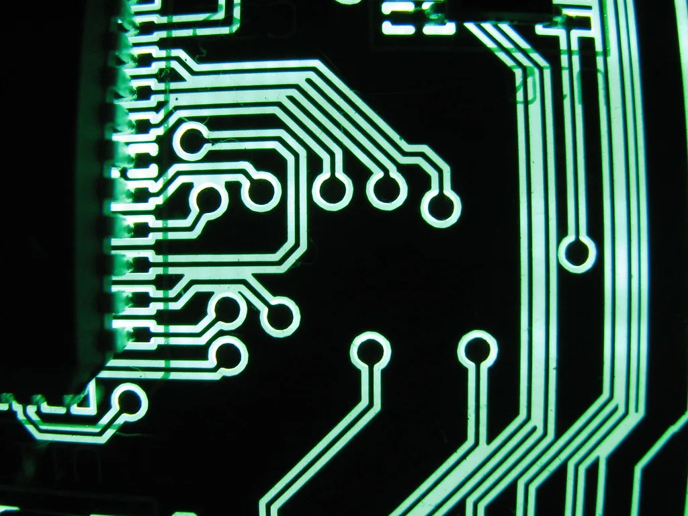

3일 코스피가 인공지능(AI) 투자의 수익성을 둘러싼 우려가 다시 번지면서 급락 출발했다. 코스피는 전 거래일보다 2%대 넘게 밀린 5715선에서 거래를 시작한 뒤 장 초반 하락폭을 키워 3%대까지 떨어지며 5700선 아래로 내려섰다. 코스닥지수도 1%대 넘게 하락해 720선으로 밀렸다. 전날까지 반도체 랠리에 힘입어 견조한 흐름을 보였던 시장 분위기가 하루 만에 급반전된 모습이다.
이날 낙폭을 키운 직접적인 계기는 미국 소프트웨어 기업 오라클이 내놓은 대규모 자금조달 계획이다. 오라클은 보통주 100억 달러, 선순위채권 100억 달러어치를 발행해 총 200억 달러를 조달하겠다고 발표했다. 조달한 자금은 AI 데이터센터 등 설비투자, 기존 채무 상환, 인수합병, 배당과 자사주 매입 등에 쓰일 예정이다. 그러나 이미 1250억 달러를 넘어선 기존 차입 규모에 추가 조달 소식이 겹치면서 AI 인프라 투자에 따른 재무 부담이 다시 부각됐고, 이는 뉴욕증시 반도체·AI 관련주 전반의 약세로 이어졌다.
국내 증시에서는 두 반도체 대형주의 낙폭이 두드러졌다. 삼성전자는 장중 4%대 넘게 하락해 21만9000원대까지 밀렸고, SK하이닉스도 비슷한 수준으로 떨어져 140만원대 초반까지 내려갔다. 두 종목이 코스피 전체 시가총액에서 차지하는 비중이 워낙 커서, 이들의 동반 약세가 지수 전체를 끌어내리는 구조가 이번에도 그대로 재연됐다. 미국 시장에서도 마이크론이 5%대, 엔비디아가 1%대 하락하며 AI·반도체 밸류체인 전반에 걱정이 번졌다.
다만 이날 급락에는 반도체 업종만의 문제가 아니라는 분석도 나온다. 국제유가가 미국과 이란 간 협상 기대감에 하락하고 미국 장기금리도 내려가는 등 다른 거시 지표는 오히려 우호적으로 움직였는데도 증시가 떨어진 것은, 투자자들의 관심이 거시 변수보다 AI 기업들의 현금창출력과 투자 대비 수익성이라는 미시적 요인에 더 민감하게 쏠려 있음을 보여준다는 평가다. 올해 글로벌 증시를 이끈 동력이 AI 설비투자 기대감이었던 만큼, 그 기대감이 흔들릴 때 되돌림의 폭도 커질 수 있다는 우려가 깔려 있다.

국내 증권가에서는 이번 급락을 두고 단기 변동성과 추세 전환 가능성을 놓고 시각이 엇갈린다. 메모리 반도체 가격 상승과 수출 호조 등 국내 반도체 업종의 실물 지표는 여전히 양호한 만큼 이번 조정이 과도하다는 분석과, 글로벌 빅테크들의 AI 투자 관련 자금조달이 계속 이어질 가능성이 큰 만큼 비슷한 변동성이 반복될 수 있다는 신중론이 함께 제기된다. 실제로 장중에는 저가 매수세가 일부 유입되며 낙폭을 다소 줄이는 흐름도 나타났다.
전문가들은 당분간 뉴욕증시에서 나오는 빅테크·AI 기업들의 자금조달과 실적 관련 소식에 국내 증시가 그대로 연동해 움직일 가능성이 크다고 내다본다. AI 투자의 지속 가능성에 대한 시장의 신뢰가 얼마나 빨리 회복되느냐가 반도체 대형주를 비롯한 코스피 전반의 다음 방향을 가를 핵심 변수로 꼽힌다. 수출 등 실물 지표와 주가 사이의 간극을 어떻게 좁혀갈지가 투자자들에게 남겨진 과제라는 분석이다.
외국인 투자자들의 수급 변화도 관심사다. 그동안 외국인은 반도체 대형주를 중심으로 꾸준히 순매수를 이어오며 코스피 상승을 뒷받침해왔는데, 이번 급락 국면에서 매도세로 돌아설지, 아니면 저가 매수 기회로 받아들일지가 향후 지수 흐름을 가늠하는 단서가 될 전망이다. 증권가에서는 당분간 미국 빅테크들의 자금조달 소식과 실적 발표 일정을 예의주시하며 보수적인 매매 전략을 유지할 필요가 있다고 조언하고 있다.